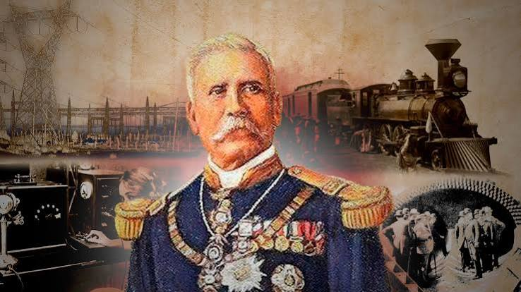
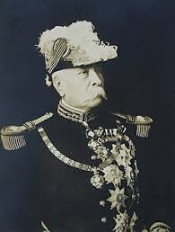
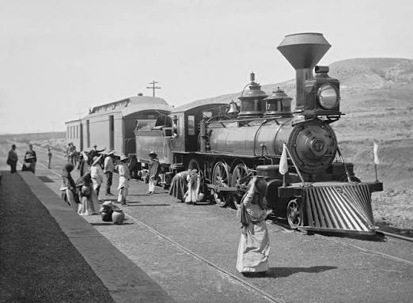

Una época que transformó a México

El Porfiriato fue un periodo de la historia de México en el que Porfirio Díaz gobernó durante gran parte de los años comprendidos entre 1876 y 1911. Se caracterizó por el crecimiento económico, la modernización y también por la desigualdad social.
📜 ¿Qué fue el Porfiriato?
Fue una etapa histórica en la que Porfirio Díaz mantuvo el poder durante más de 30 años, con una breve interrupción entre 1880 y 1884, cuando gobernó Manuel González.
Durante este periodo se impulsó la inversión extranjera, la construcción de ferrocarriles y el crecimiento de algunas industrias.
👤 Porfirio Díaz

José de la Cruz Porfirio Díaz Mori nació el 15 de septiembre de 1830 en Oaxaca. Fue militar y político mexicano. Llegó al poder en 1876 y permaneció como figura dominante del gobierno hasta 1911.
🚂 Avances tecnológicos

Durante el Porfiriato hubo importantes cambios tecnológicos:
- Construcción de vías ferroviarias.
- Expansión del telégrafo.
- Instalación de alumbrado eléctrico.
- Desarrollo de fábricas e industrias.
- Mejoras en algunos puertos y ciudades.
⚖️ La sociedad durante el Porfiriato
Aunque el país tuvo crecimiento económico, los beneficios no llegaron a todos por igual.
- Los ricos y empresarios concentraban gran parte de la riqueza.
- Muchos campesinos perdieron sus tierras.
- Los trabajadores tenían bajos salarios y largas jornadas.
- Existía poca libertad política.
🎨 Cultura y educación
Durante esta época se construyeron edificios, teatros y monumentos. La arquitectura recibió una fuerte influencia europea, especialmente francesa.
También se impulsaron instituciones educativas y las ciencias, aunque el acceso a la educación seguía siendo desigual.
🔥 El fin del Porfiriato
En 1910 comenzó la Revolución Mexicana, impulsada por el descontento social y político. Francisco I. Madero se opuso a la reelección de Díaz y llamó al levantamiento armado.
En mayo de 1911, Porfirio Díaz renunció a la presidencia y salió del país.
⭐ ¿Sabías que...?
Durante el Porfiriato se inauguró el Ángel de la Independencia en la Ciudad de México, el 16 de septiembre de 1910, como parte de las celebraciones del centenario de la Independencia.
📝 Conclusión
El Porfiriato fue una etapa de grandes transformaciones para México. Aunque hubo avances económicos y tecnológicos, también existieron injusticias, desigualdad y falta de democracia. El descontento de la población contribuyó al inicio de la Revolución Mexicana en 1910.